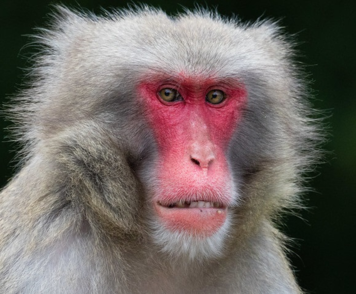

Macaco-negro
O macaco-negro é um Macaco do Velho Mundo da subfamília Cercopithecidae, que ocorre no nordeste da Indonésia e nas Celebes e em algumas pequenas ilhas vizinhas. É conhecido por yaki, no idioma local.
Macaco-prego
Sapajus é um gênero de primatas da América do Sul que inclui as espécies de macaco-prego, também chamados micos-de-topete. Os macacos do Novo Mundo do gênero Sapajus pertencem à família Cebidae, subfamíia Cebinae, e são uns dos mais comuns primatas da América do Sul.

Macaco-japonês
macaco-japonês ou macaco-do-japão (nome científico: Macaca fuscata) é um macaco da família dos cercopitecídeos, endêmico do sul do Japão. Tais animais habitam as florestas que estão localizadas acima de 1 500 metros de altitude.